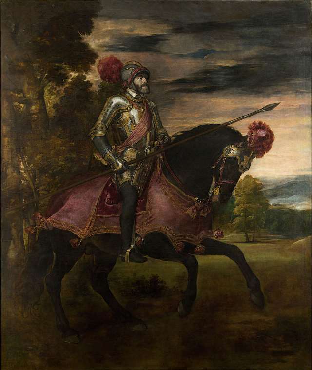

Designer & Biografia
leonardo.barbiero@gmail.com
Contenuti & Revisione
bottin.marco@gmail.com
 Validato CSS3
Validato CSS3
Carlo V a cavallo1548 - Museo del Prado, Madrid L'opera ritrae Carlo V d'Asburgo, Sacro Romano Imperatore, a cavallo. Il quadro è uno dei tanti di Tiziano commissionati dalla famiglia imperiale. L'Impero moderno del '500 non è più quello cavalleresco-medievale e necessita di un'immagine pubblica nuova ed efficace. Inoltre deve coniugare insieme classicità (rappresentata dall'esempio costante dell'Impero romano) e modernità, in modo che le diverse etnie e culture che compongono l'enorme Impero possano tutte riconoscersi nella figura unificante dell'imperatore. Tiziano – profondo conoscitore della comunicazione – riesce in quest'opera delicatissima, armonizzando gli ideali cavallereschi della Borgogna (ben conosciuti dall'imperatore) con i riferimenti al mondo classico (Carlo V era infatti anche chiamato Caesar Carolus, nel tentativo di avvicinarlo al modello dato dagli imperatori romani). L'opera viene commissionata da Maria d'Ungheria, sorella di Carlo V, per celebrare la vittoria dell'esercito del fratello sui protestanti della Lega di Smalcalda a Mühlberg (24 aprile 1547). L'imperatore a cavallo viene raffigurato come un vero e proprio soldato di Cristo in difesa della cristianità minacciata dal crescente diffondersi del Protestantesimo. Egli sostiene con la mano destra una lancia - un riferimento sia alla possenza degli antichi imperatori romani (di cui come detto Carlo si considera l'erede) sia un riferimento alla lancia di Longino (che venne conficcata nel costato di Gesù Cristo durante la Passione) o a quella di San Giorgio (con la quale il santo trafisse il drago, bestia comunemente associata all'eresia). Il volto dell'imperatore è serio ed impassibile, anche se non totalmente realistico in quanto Tiziano nel dipingerlo ne addolcì il prognatismo mandibolare. Indossa una prestigiosa armatura ricoperta d'oro e d'argento, che tuttora è conservata nell'Armeria del Palazzo Reale di Madrid insieme alla raffinata bardatura del cavallo. Il paesaggio di fondo è placido, occupato dal fiume Elba, e non vengono rappresentati i nemici sconfitti (dietro alla figura equestre c'è solo un bosco). La luce e i colori sono molto caldi, con predominanza dei rossi e degli ocra. Il dipinto ha parlato ai sudditi e ai nemici dell'imperatore in modo inequivocabile, mostrando nello stesso tempo la forza del guerriero, la saggezza del sovrano, la fatica dell'uomo. Secondo un aneddoto, peraltro confermato da una serie di radiografie, il quadro appena eseguito venne rovesciato a terra dal vento mentre si trovava all'aria messo ad asciugare. Ne risultò danneggiata la parte posteriore del cavallo, che fu poi ridipinta da un altro pittore (Christoph Amberger). L'opera divenne l'immagine dinastica per eccellenza della casa d'Austria. Nel 1734 rischiò però di finire bruciata dal grande incendio che distrusse il palazzo reale, il Real Alcázar di Madrid; la traccia lasciata dall'incendio è chiaramente visibile nell'alone scuro che pervade l'estremità inferiore. Dal 1827 è custodita presso il Museo del Prado di Madrid. |
| Barbiero Leonardo
Designer & Biografia leonardo.barbiero@gmail.com |
Bottin Marco
Contenuti & Revisione bottin.marco@gmail.com |
Accessibilità
Validato CSS3
|